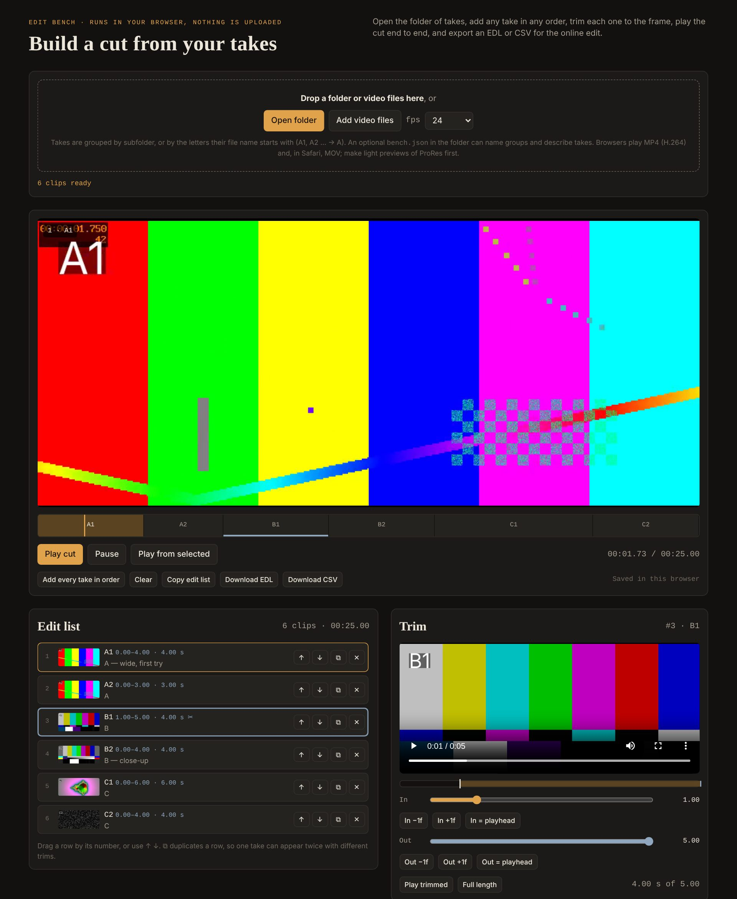

Make new or replacement shots for a film with AI video, driven from Claude, using Higgsfield and Magnific. Then cut them together in a free edit bench that runs in your browser.

The edit bench, shown with test clips.
Instructions that make Claude a careful assistant on a film:
A single web page, with no install and no upload: your clips stay on your computer.
edit-bench/index.html and open it offline.A1, A2 → A).bench.json can name the groups and describe takes: see the example.Browsers play MP4 (H.264) everywhere and MOV in Safari. For ProRes masters, make light previews first with scripts/make_preview.sh. Your edit and versions are kept in your browser; after a reload, open the folder again so the clips can play.
https://mcp.higgsfield.ai/mcphttps://mcp.magnific.comai-film-shots folder and add it to Claude as a skill.They need ffmpeg (brew install ffmpeg on a Mac).
contact_sheet.sh | One image with stamped frames of a take, to judge it at a glance |
encode_prores4444.sh | ProRes 4444 master, optionally mirrored (a wound on the wrong side) and conformed to the frame size |
render_cut.sh | Frame-accurate shots from the edit bench's CSV, then the joined cut, in ProRes, 4K MP4 or a light preview |
make_preview.sh | Light preview and thumbnail of a take, for the edit bench |